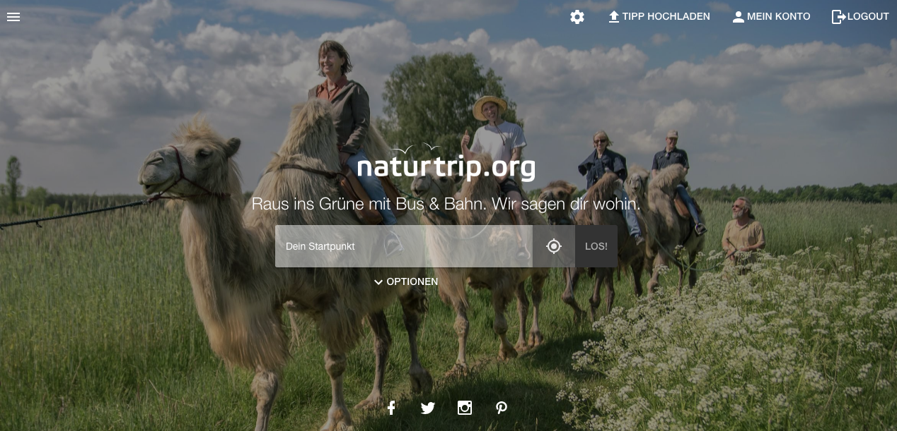
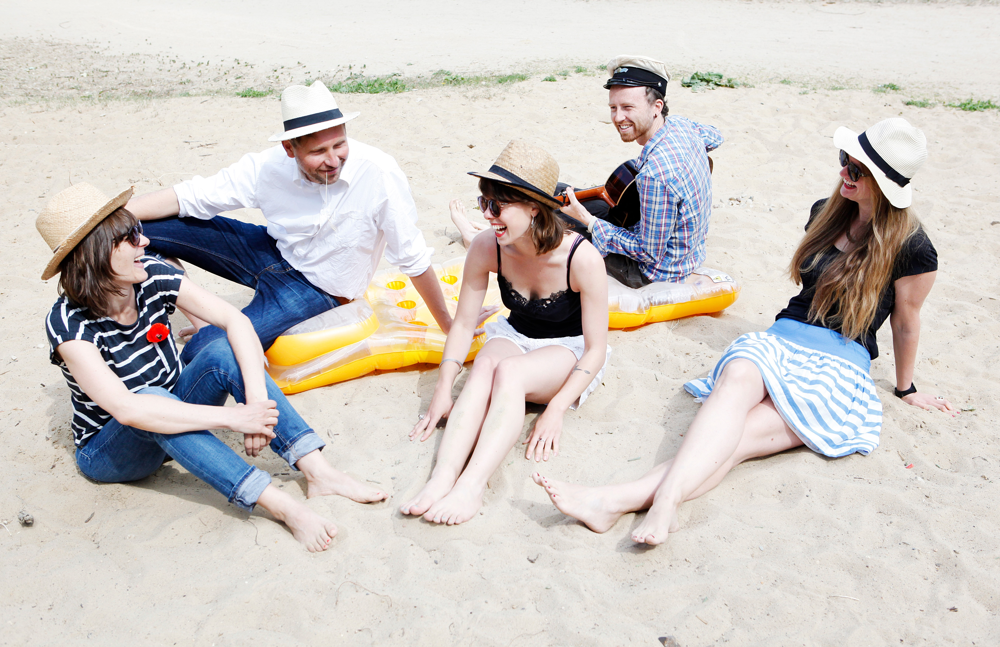

In Deutschland werden 80% der Freizeit-Wege mit dem Auto zurückgelegt, obwohl die Deutschen als sehr umweltbewusst gelten und der Zusammenhang von Klimawandel und CO2-Ausstoß allgemein bekannt ist. Im Urlaub und in der Freizeit sind vielen die Planungsunsicherheit von öffentlichen Verkehrsmitteln zu groß und die Erreichbarkeiten unklar. Man weiß, dass es tolle Seen zum Paddeln gibt. Aber wo muss ich genau aussteigen? Und wie weit ist es dann noch zu laufen? In den meisten Fällen werden Ausflüge daher nach wie vor mit dem Auto unternommen, statt auf klimaneutrale öffentliche Verkehrsmittel zu setzen.
{% endblock %} {% block solution %}Mithilfe von Fahrplanrohdaten der Verkehrsbetriebe und einer Big-Data-Software ermöglicht naturtrip.org die Freizeitgestaltung mit Bus und Bahn genauso bequem und planungssicher wie mit dem Auto. naturtrip.org zeigt nur die Ausflugtipps an, zu denen man bequem mit den öffentlichen Verkehrsmitteln und dem Rad gut hinkommt. Viele Ziele sind mit öffentlichen Verkehrsmitteln sogar einfacher und schneller zu erreichen und genau diese findet naturtrip.org für seine Nutzer individuell angepasst an ihre Bedürfnisse. Dabei lädt die Seite Nutzer ein, neue Orte über präferierte Aktivitäten zu entdecken: paddeln, gut essen oder in eine Therme gehen – oft weiß man zwar nicht wohin, aber was man machen möchte. Genau hier setzt naturtrip.org an und schlägt Unternehmungslustigen solche Freizeit-Tipps vor, die vom individuellen Startpunkt und der Reisezeit mit Bahn, Bus oder Rad gut zu erreichen sind. Da bisher nur die Rohdaten der Verkehrsbetriebe Berlins und Brandenburgs zur Verfügung stehen, beschränkt sich die Suche aktuell auf dieses Gebiet. An einem Ausbau wird gearbeitet, doch der hängt von der Verfügbarkeit der Fahrplandaten weiterer regionaler Verkehrsverbünde ab. Nutzbar ist naturtrip.org als Website sowie auf dem Smartphone und Tablet.
Naturtrip.org verwendet die Fahrplandaten des Verkehrsverbunds Berlin-Brandenburg. Die Daten liegen im GTFS-Format vor und sind als Open Data freigegeben. Das Kartenmaterial von naturtrip.org basiert auf Open Street Map.
Naturtrip.org nutzt eine intelligente Routing-Software von Motion Intelligence. Damit werden Big-Data-Abfragen in binnen Sekunden gemacht und in einer Umkreissuche alle Orte identifizert, die zum gewünschten Zeitpunkt gut zu erreichen sind. Sobald man ein Ausflugsziel ausgewählt hat, bekommt der Nutzer die konkrete Fahrplanauskunft inklusive Umsteigen.
{% endblock %} {% block benefitters %}
 Jeder, der neue Ziele im Grünen mit den öffentlichen Verkehrsmitteln in Berlin und Brandenburg entdecken möchte.
Gute Ausflugstipps werden von Nutzern an andere Nutzer weitergegeben und können auch von touristischen Betrieben und
Freizeitzielen selbst online gestellt werden.
Jeder, der neue Ziele im Grünen mit den öffentlichen Verkehrsmitteln in Berlin und Brandenburg entdecken möchte.
Gute Ausflugstipps werden von Nutzern an andere Nutzer weitergegeben und können auch von touristischen Betrieben und
Freizeitzielen selbst online gestellt werden.
So profitieren Unternehmenslustige, Betreiber von Ausflugszielen und
nicht zuletzt das Klima. Aber auch die Verkehrsbetriebe gewinnen, und zwar in doppelter Hinsicht: Sie gewinnen
Kunden und positionieren sich als umweltschützendes Verkehrsmittel. Außerdem profitieren die Tourismusregionen,
weil naturtrip.org städtische Zielgruppen ohne Auto auf’s Land bringt.
Caro und Paul wohnen seit einigen Monaten in Berlin. Nachdem sie das Leben in der Großstadt ausgiebig genossen haben, wollen sie am Wochenende endlich einmal das grüne Umland Berlins kennenlernen und einen Ausflug machen. Caro möchte den Tag am Wasser verbringen, schließlich hat sie schon so viel von den Seen rund um Berlin gehört. Und Paul möchte seine freie Zeit auf keinen Fall in einer großen Touristentraube verbringen. Naturbelassen und dennoch mit einer netten Einkehrmöglichkeit, so stellt er sich das Ausflugsziel vor. Leider kennen sich die zwei im Umland Berlins noch gar nicht aus und sind ratlos, wo sie beginnen sollen. Ihr Auto haben sie in der Annahme, es in der Großstadt nicht mehr zu brauchen, verkauft. Sollen sie versuchen das Berliner Umland mit den öffentlichen Verkehrsmitteln zu erkunden? Was ist, wenn sie durch schlechte Verbindungen irgendwo im Nirgendwo landen und dort festsitzen? Sie haben gehört, dass es zum Beispiel schöne Seen zum Paddeln gibt, aber wo müssen sie dafür genau aussteigen?
 Eine Freundin von Lena empfiehlt ihnen die Internetseite naturtrip.org. Hier bekommt man Ausflugsziele im Grünen vorgeschlagen, die mit Bus und Bahn sehr gut zu erreichen sind. Dafür geben Caro und Paul zunächst ihren derzeitigen Standort an. Filtern können sie ihre Suche im nächsten Schritt nach Reisezeit, Transportmittel – Zug und Bus, Rad oder zu Fuß – und verschiedenen Kategorien. Hier können Sie beliebig viele Kategorien wie „Aktiv“, „Kultur“, „Mit Kindern“ oder „Rad & Wandern“ auswählen. Sie entscheiden sich dafür, dass sie maximal 50 Minuten unterwegs sein wollen und dass sie gerne ihr Monatsticket nutzen möchten, um mit Zug und Bus unterwegs zu sein. Außerdem einigen sie sich aufgrund ihrer Vorlieben auf die Ausflugskategorien „See & Fluss“ und „Gastlich“.
Im nächsten Schritt bietet ihnen die Seite folgendes:
 Caro und Paul sind überrascht, wie viele bunte Punkte sie auf der Karte finden. Manche Ausflugsziele sind gar nicht weit entfernt, ihnen aber im Alltag noch nie aufgefallen. Die Suche lädt dazu sein, die verschiedenen Parameter zu variieren. Also probieren sie aus, wie sich die Ergebnisse verändern, wenn sie länger oder kürzer unterwegs sein wollen und was es für spannende Orte in anderen Kategorien rund um Berlin gibt.
Schließlich entscheiden sich Caro und Paul für einen Bootsverleih mit Fischerpinte am Plötzensee. Hier sind sie im Grünen abseits der Touristenpfade, wo Caro ihre Füße vom Tretboot ins Wasser halten kann und die beiden den Tag in einer urigen Fischerpinte ausklingen lassen können. Unterwegs sind sie nur 42 Minuten und dank der integrierten Reiseverbindung auf naturtrip.org kommen sie bequem ans Ziel und wieder nach Hause. Den schönen Wanderweg, den sie bei ihrem Ausflug am See entdeckt haben, werden sie nach ihrer Rückkehr gleich auf naturtrip.org mit einem Bild hochladen.
{% endblock %} {% block sources %}Offizielle Seite:
http://www.naturtrip.org